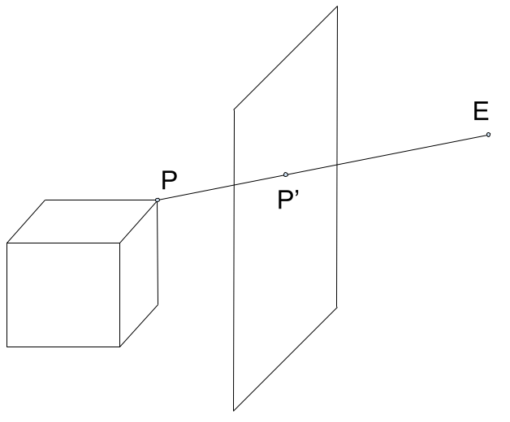

Proiezione
Lo scopo dell'applicativo è proiettare due mani per formare delle ombre cinesi sullo schermo di un palco, creando quindi la proiezione degli oggetti 3D sul piano utilizzando la geometria proiettiva.
Il modello utilizzato è composto da:
- Il centro di proiezione, che chiamiamo punto E, che funge da punto di vista
- Il piano immagine, o schermo, che chiamiamo π, disgiunto dal punto E
- L'oggetto da proiettare, disgiunto dal punto E e dal piano π
Prendiamo in considerazione la retta passante per il punto P, appartenente all'oggetto, e il punto E. Tale retta interseca il piano in un punto P', che rappresenta la proiezione di P sullo schermo stesso.
Tutti i punti nello spazio, eccetto E, hanno un unico corrispondente che giace sullo schermo, ma la rappresentazione non è biunivoca, poiché possono esserci punti differenti nello spazio 3D che sono rappresentati sul piano dallo stesso punto.
Più comunemente, una proiezione è rappresentata con il piano di proiezione posizionato tra l'oggetto e il punto E. Nel nostro caso particolare, l'oggetto da proiettare si trova tra il punto E e il piano, ma il meccanismo rimane il medesimo.

L'ombra è il risultato della proiezione della mano a partire dal punto E, che rappresenta il punto di vista della proiezione. Il piano π, invece, corrisponde allo schermo del palco, cioè la parete su cui verrà proiettata l'ombra. La mano, oggetto proiettato, è disgiunta da entrambi questi elementi e non ha punti in comune con essi.
La proiezione si ottiene individuando i punti di intersezione tra il piano di proiezione e le rette passanti per il punto E e per i vertici dei triangoli T che definiscono la superficie dell'oggetto da proiettare.
In particolare, trattandosi di un oggetto complesso, ad ogni T facciamo corrispondere un triangolo proiettato, i cui vertici vengono utilizzati per creare la mesh dell'ombra completa.
Intersezione retta-piano
Dato un vertice P del poligono, la retta r passante per i punti P ed E è definita dalle seguenti equazioni:
Il piano π, per semplicità, è fisso e posizionato ortogonalmente al vettore (-1,0,0) ed è passante per l'origine degli assi. Nota: il sistema di riferimento visibile, con gli assi colorati, non ha l'origine in O. L'equazione di π è quindi:
[DA AGGIUNGERE DUE "=" N =.... e O =....]
Per determinare il punto di intersezione tra la retta r e il piano π è sufficiente calcolare il parametro t sostituendo le equazioni parametriche della retta nell'equazione cartesiana del piano:
Trovato t è possibile sostituirlo nell'equazione della retta r per ottenere le coordinate del punto di intersezione.
[La matrice qui sotto è corretta, ma andrebbe confrontata con quanto si dice dopo sulle camere proiettive, io la metterei dopo quella parte, spiegando perchè questa matrice è (4,4), NON è una camera proiettiva, e ciò nonostante voi l'avete usata, credo ]
In alternativa è possibile determinare la matrice M di proiezione e procedere tramite calcolo matriciale con coordinate omogenee, ottendendo così le coordinate dell'intersezione a meno di un fattore di proporzionalità.
Le coordinate omogenee hanno vari vantaggi, tra cui la possibilità di rappresentare traslazioni e proiezioni in modo uniforme, e la possibilità di rappresentare punti all'infinito. Inoltre, le trasformazioni affini possono essere rappresentate come prodotti di matrici in coordinate omogenee, semplificando i calcoli e permettendone la composizione.
Trasformazioni geometriche
Con l'obiettivo di mettere a disposizione varie rappresentazioni di ombre e permettere all'utente di crearne di nuove, è necessario applicare trasformazioni affini all'oggetto e ai sotto-oggetti di cui è composto, in modo da poterlo traslare e ruotare.
Una trasformazione affine è una classe di trasformazioni geometriche che preserva la linearità delle rette e la coplanarità dei punti. In altre parole, durante una trasformazione affine, i punti allineati rimarranno allineati, e i punti che giacciono sullo stesso piano prima della trasformazione continueranno a farlo dopo la trasformazione.
Queste trasformazioni possono essere descritte dalla seguente formula, in cui A rappresenta una matrice quadrata invertibile:
Le trasformazioni affini, che includono traslazioni, rotazioni, ridimensionamenti e riflessioni, svolgono un ruolo fondamentale nella nostra applicazione. In particolare, utilizziamo traslazioni e rotazioni per posizionare e orientare accuratamente le mani rispetto al piano di proiezione e alla fonte di luce, e per ruotare le falangi l'una rispetto all'altra, e rispetto al polso.
Rototraslazione
Si ha una trasformazione di traslazione se A = I e c ≠ 0. c rappresenta il vettore di traslazione che sposta ogni punto P in P' tale che P' - P = c. La traslazione è una operazione commutativa ed è chiusa in quanto la composizione di più traslazioni è essa stessa una traslazione.
La rotazione è definita in un sistema di riferimento locale all'oggetto, in modo da mantenere la gerarchia della struttura della mano. Per ogni asse attorno al quale si deve ruotare si definisce un angolo di rotazione che viene applicato dalla matrice di rotazione che ruota l'oggetto su ogni asse indipendentemente.
Le tre matrici qui di seguito rappresentano rotazioni rispetto agli assi X, Y e Z di angoli, rispettivamente alfa, beta, gamma.
La composizione di trasformazioni affini offre una flessibilità fondamentale per ottenere diverse rappresentazioni di ombre, consentendo variazioni nelle posizioni e orientamenti delle mani.
Ad esempio, per determinare la posizione finale di un punto F sulla falangetta del dito indice, è necessario combinare le seguenti rotazioni:
La rotazione del punto F rispetto all'origine centrata nel punto G posto sulla falangina
La rotazione della falangina rispetto all'origine centrata nel punto H poso sulla falange
La rotazione della falange rispetto all'origine centrata nel punto I posto sul polso
In questo modo ottengo la posizione del punto F della falangetta rispetto al sistema di riferimento dell'engine utilizzato per sviluppare l'applicativo.
Camera Proiettiva
L'applicativo utilizza una camera fissa per visualizzare la proiezione. La scena costruita deve, quindi, essere proiettata da uno spazio 3D a un piano di proiezione che corrisponde allo schermo dove viene visualizzata.
Questo meccanismo si ottiene tramite l'utilizzo di una camera proiettiva definita da una matrice N.
Per costruire la matrice sopra citata è possibile partire da una semplice proiezione con la camera in posizione canonica, cioè centrata nell'origine, con un piano di proiezione di equazione Z = f; f è la distanza focale mentre l'asse Z corrisponde all'asse focale.
È possibile definire un sistema di riferimento sul piano Z = f con assi x e y locali paralleli agli assi X e Y nello spazio.
Con questi presupposti si può costruire una semplice matrice K di proiezione, chiamando K la sottomatrice data dalle prime tre colonne, con punti in coordinate omogenee.
In una situazione più generale la camera si trova in un posizione generica, risultato dell'applicazione di una rototraslazione dall'origine al centro della camera.
È quindi possibile considerare l'applicazione della rototraslazione inversa in modo da riportare la camera nella situazione canonica per descriverne la trasformazione.
La matrice A è una matrice ortogonale, quindi la sua inversa R può essere calcolata come la trasposta di A ed è formata dai versori riga che definiscono il sistema di riferimento nel centro della camera.
La matrice N della camera è quindi la combinazione delle matrici descritte.